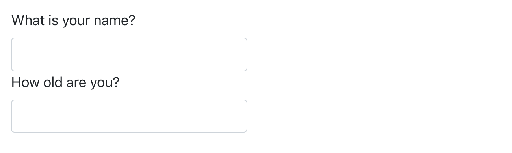

quarto::quarto_render("diamond-sizes.qmd", output_format = "docx")Quarto formats
Introduction
So far, you’ve seen Quarto used to produce HTML documents. This chapter gives a brief overview of some of the many other types of output you can produce with Quarto.
There are two ways to set the output of a document:
Permanently, by modifying the YAML header:
title: "Diamond sizes" format: htmlTransiently, by calling
quarto::quarto_render()by hand:This is useful if you want to programmatically produce multiple types of output since the
output_formatargument can also take a list of values.quarto::quarto_render("diamond-sizes.qmd", output_format = c("docx", "pdf"))
Output options
Quarto offers a wide range of output formats. You can find the complete list at https://quarto.org/docs/output-formats/all-formats.html. Many formats share some output options (e.g., toc: true for including a table of contents), but others have options that are format specific (e.g., code-fold: true collapses code chunks into a <details> tag for HTML output so the user can display it on demand, it’s not applicable in a PDF or Word document).
To override the default options, you need to use an expanded format field. For example, if you wanted to render an html with a floating table of contents, you’d use:
format:
html:
toc: true
toc_float: trueYou can even render to multiple outputs by supplying a list of formats:
format:
html:
toc: true
toc_float: true
pdf: default
docx: defaultNote the special syntax (pdf: default) if you don’t want to override any default options.
To render to all formats specified in the YAML of a document, you can use output_format = "all".
quarto::quarto_render("diamond-sizes.qmd", output_format = "all")Documents
The previous chapter focused on the default html output. There are several basic variations on that theme, generating different types of documents. For example:
pdfmakes a PDF with LaTeX (an open-source document layout system), which you’ll need to install. RStudio will prompt you if you don’t already have it.docxfor Microsoft Word (.docx) documents.odtfor OpenDocument Text (.odt) documents.rtffor Rich Text Format (.rtf) documents.gfmfor a GitHub Flavored Markdown (.md) document.ipynbfor Jupyter Notebooks (.ipynb).
Remember, when generating a document to share with decision-makers, you can turn off the default display of code by setting global options in the document YAML:
execute:
echo: falseFor html documents another option is to make the code chunks hidden by default, but visible with a click:
format:
html:
code: truePresentations
You can also use Quarto to produce presentations. You get less visual control than with a tool like Keynote or PowerPoint, but automatically inserting the results of your R code into a presentation can save a huge amount of time. Presentations work by dividing your content into slides, with a new slide beginning at each second (##) level header. Additionally, first (#) level headers indicate the beginning of a new section with a section title slide that is, by default, centered in the middle.
Quarto supports a variety of presentation formats, including:
revealjs- HTML presentation with revealjspptx- PowerPoint presentationbeamer- PDF presentation with LaTeX Beamer.
You can read more about creating presentations with Quarto at https://quarto.org/docs/presentations.
Interactivity
Just like any HTML document, HTML documents created with Quarto can contain interactive components as well. Here we introduce two options for including interactivity in your Quarto documents: htmlwidgets and Shiny.
htmlwidgets
HTML is an interactive format, and you can take advantage of that interactivity with htmlwidgets, R functions that produce interactive HTML visualizations. For example, take the leaflet map below. If you’re viewing this page on the web, you can drag the map around, zoom in and out, etc. You obviously can’t do that in a book, so Quarto automatically inserts a static screenshot for you.
library(leaflet)
leaflet() |>
setView(174.764, -36.877, zoom = 16) |>
addTiles() |>
addMarkers(174.764, -36.877, popup = "Maungawhau") The great thing about htmlwidgets is that you don’t need to know anything about HTML or JavaScript to use them. All the details are wrapped inside the package, so you don’t need to worry about it.
There are many packages that provide htmlwidgets, including:
dygraphs for interactive time series visualizations.
DT for interactive tables.
threejs for interactive 3d plots.
DiagrammeR for diagrams (like flow charts and simple node-link diagrams).
To learn more about htmlwidgets and see a complete list of packages that provide them visit https://www.htmlwidgets.org.
Shiny
htmlwidgets provide client-side interactivity — all the interactivity happens in the browser, independently of R. On the one hand, that’s great because you can distribute the HTML file without any connection to R. However, that fundamentally limits what you can do to things that have been implemented in HTML and JavaScript. An alternative approach is to use shiny, a package that allows you to create interactivity using R code, not JavaScript.
To call Shiny code from a Quarto document, add server: shiny to the YAML header:
title: "Shiny Web App"
format: html
server: shinyThen you can use the “input” functions to add interactive components to the document:
library(shiny)
textInput("name", "What is your name?")
numericInput("age", "How old are you?", NA, min = 0, max = 150)
And you also need a code chunk with chunk option context: server which contains the code that needs to run in a Shiny server.
You can then refer to the values with input$name and input$age, and the code that uses them will be automatically re-run whenever they change.
We can’t show you a live shiny app here because shiny interactions occur on the server-side. This means that you can write interactive apps without knowing JavaScript, but you need a server to run them on. This introduces a logistical issue: Shiny apps need a Shiny server to be run online. When you run Shiny apps on your own computer, Shiny automatically sets up a Shiny server for you, but you need a public-facing Shiny server if you want to publish this sort of interactivity online. That’s the fundamental trade-off of shiny: you can do anything in a shiny document that you can do in R, but it requires someone to be running R.
For learning more about Shiny, we recommend reading Mastering Shiny by Hadley Wickham, https://mastering-shiny.org.
Websites and books
With a bit of additional infrastructure, you can use Quarto to generate a complete website or book:
Put your
.qmdfiles in a single directory.index.qmdwill become the home page.Add a YAML file named
_quarto.ymlthat provides the navigation for the site. In this file, set theprojecttype to eitherbookorwebsite, e.g.:project: type: book
For example, the following _quarto.yml file creates a website from three source files: index.qmd (the home page), viridis-colors.qmd, and terrain-colors.qmd.
project:
type: website
website:
title: "A website on color scales"
navbar:
left:
- href: index.qmd
text: Home
- href: viridis-colors.qmd
text: Viridis colors
- href: terrain-colors.qmd
text: Terrain colorsThe _quarto.yml file you need for a book is very similarly structured. The following example shows how you can create a book with four chapters that renders to three different outputs (html, pdf, and epub). Once again, the source files are .qmd files.
project:
type: book
book:
title: "A book on color scales"
author: "Jane Coloriste"
chapters:
- index.qmd
- intro.qmd
- viridis-colors.qmd
- terrain-colors.qmd
format:
html:
theme: cosmo
pdf: default
epub: defaultWe recommend that you use an RStudio project for your websites and books. Based on the _quarto.yml file, RStudio will recognize the type of project you’re working on, and add a Build tab to the IDE that you can use to render and preview your websites and books. Both websites and books can also be rendered using quarto::quarto_render().
Read more at https://quarto.org/docs/websites about Quarto websites and https://quarto.org/docs/books about books.
Other formats
Quarto offers even more output formats:
You can write journal articles using Quarto Journal Templates: https://quarto.org/docs/journals/templates.html.
You can output Quarto documents to Jupyter Notebooks with
format: ipynb: https://quarto.org/docs/reference/formats/ipynb.html.
See https://quarto.org/docs/output-formats/all-formats.html for a list of even more formats.
Summary
In this chapter we presented you a variety of options for communicating your results with Quarto, from static and interactive documents to presentations to websites and books.
To learn more about effective communication in these different formats, we recommend the following resources:
To improve your presentation skills, try Presentation Patterns by Neal Ford, Matthew McCollough, and Nathaniel Schutta. It provides a set of effective patterns (both low- and high-level) that you can apply to improve your presentations.
If you give academic talks, you might like the Leek group guide to giving talks.
We haven’t taken it ourselves, but we’ve heard good things about Matt McGarrity’s online course on public speaking: https://www.coursera.org/learn/public-speaking.
If you are creating many dashboards, make sure to read Stephen Few’s Information Dashboard Design: The Effective Visual Communication of Data. It will help you create dashboards that are truly useful, not just pretty to look at.
Effectively communicating your ideas often benefits from some knowledge of graphic design. Robin Williams’ The Non-Designer’s Design Book is a great place to start.